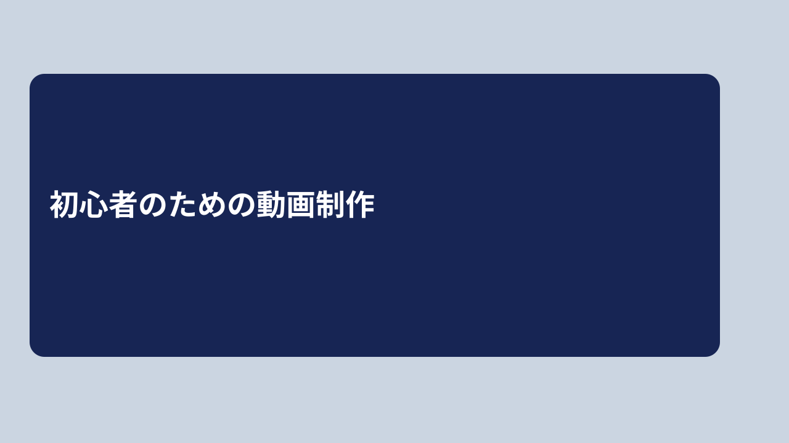
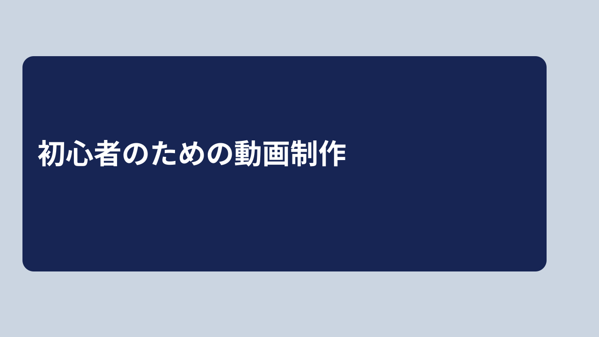
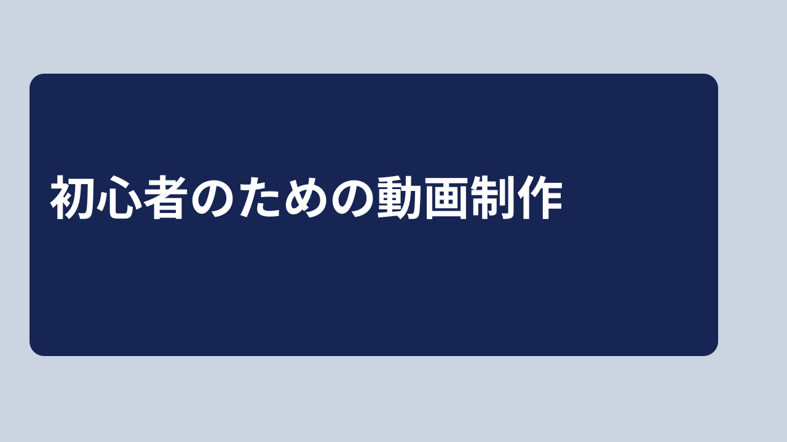

人工タイトル：初心者のための動画制作。168 / 246 / 360pxは仮の表示幅です。ブラウザのズーム100%で確認してください。
各組は背景・色・位置・太さ・フォント指定を固定し、文字サイズだけ48 / 60 / 76pxに変更しています。採点や効果の保証はありません。



記録：setId、表示幅、文字サイズ、読めたか、確認時間、理由、OS、ブラウザ、実際のフォント、ズーム。manifest.jsonに生成条件を保存しています。